Kakuda
Kakuda · Miyagi
Kakuda
Highlighted on the Miyagi map.
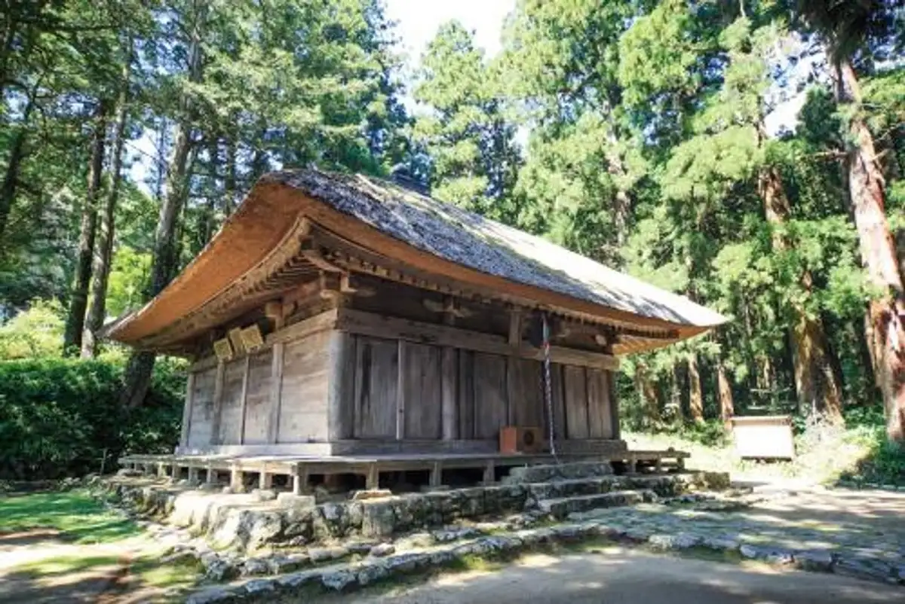
Stay
グリーンホテル角田
Guriinhoteru Kakuda
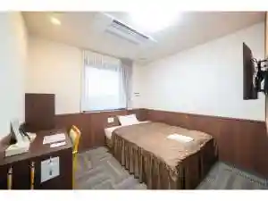
MARUKI齋福
MARUKI
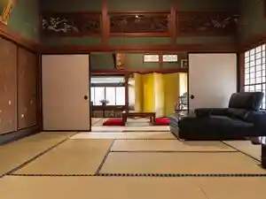
ＧＵＥＳＴＨＯＵＳＥ６６
GUESTHOUSE66
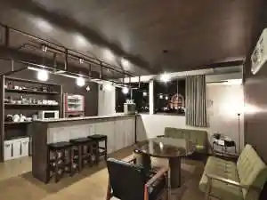
Dining
光華飯店
Hikari Hana Hanten
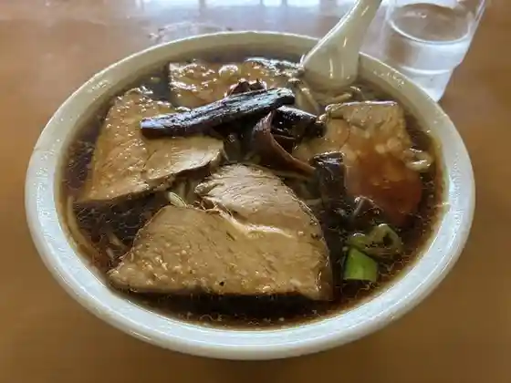
hori pan
hori pan
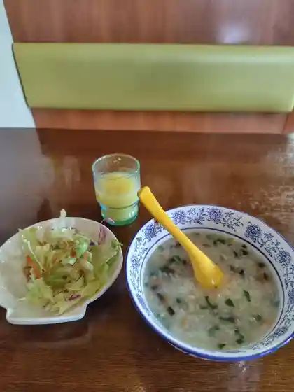
かずき
Kazuki
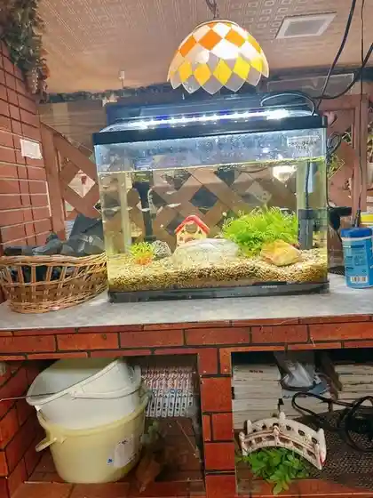
果樹園
Kajuen
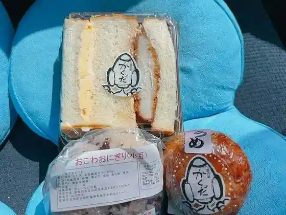
道の駅 かくだ
Michi No Eki Kakuda
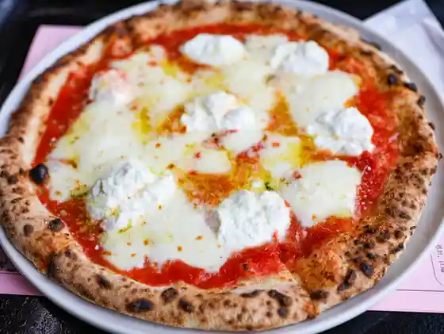
ぱぴハウス 道の駅かくだ店
Papi Hausu Michi No Eki Kakuda Mise
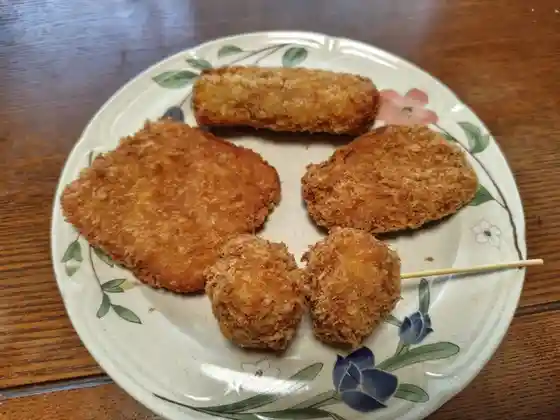
郷家精肉店
Gouke Seinikuten
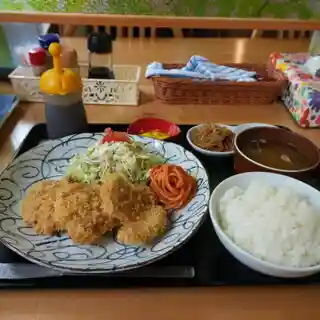
母里の風
Haha Sato No Kaze
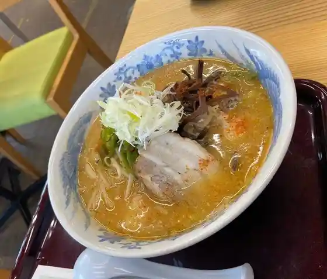
Kスポキッチン
K Supokitchin
となりの肉そば
Tonarino Niku Soba
そば処 壽庵
Soba Tokoro Juan
味の店 翔屋
Aji No Mise Shou Ya
Cream Tea
Cream Tea
ブローチ
Buroochi
中国料理 檸檬亭
Chuugokuryouri Remon Tei
心のおと
Kokoro Nooto
がぎゅうベーカリー
Gagyuu Beekarii
宮崎屋
Miyazaki Ya
前橋菓子店
Maebashi Kashi Mise
Kスポカフェ
K Supokafe
そば処たちばな
Soba Tokoro Tachibana
美よし家
Bi Yoshi Ie
ささもり 天神町本店
Sasamori Tenjin Machi Honten
京園
Kyou Sono
中華料理 かんの
Chuukaryouri Kanno
天然温泉もみの木 食事処 はなのれん
Tennen Onsen Momino Ki Shokuji Tokoro Hananoren
グリーンホテル角田
Guriinhoteru Kakuda
らーめん せん家 角田店
Raamen Sen Ie Kakuda Mise
カフェレストラン ＥＶＡＮＳ’89
EVANS89
小田嶋
Odajima
房ずし
Bou Zushi
日本料理 遊膳
Nihonryouri Yuu Zen
あぐりっと
Aguritto
泉屋・手打うどん
泉屋・手打うどん
満城香
Manjou Kaori
Panch
Panch
稲cafe あぐりっと
cafe
A&COOP 角田店
A&COOP
森の芽ぶきたまご舎 道の駅かくだ店
Mori No Me Bukitamago Sha Michi No Eki Kakuda Mise
ベコ屋の洋ちゃん
Beko Ya No Hiroshi Chan
味亭すけろく
Aji Tei Sukeroku
自家焙煎コーヒー工房ＯＧＡＴＡ
Jika Baisen Koohii Koubou O G A T A
やなぎ茶屋
Yanagi Chaya
寺珈琲 榧
Tera Koohii Kaya
清華園
Seika Sono
カフェ&キッチン テリア
Kafe & Kitchin Teria
そば処 山の内分校
Soba Tokoro Yama No Naibun Kou
あおいファーム Guest House
Guest House
カラオケまねきねこ 角田店
Karaoke Manekineko Kakuda Mise
旬味れすとらん 入の坊
Jun Aji Resutoran Haino Bou
丸惠コーヒー
Maru Megumi Koohii
中華味一 鳳
Chuuka Aji Ichi Ootori
天然温泉もみの木 そばうどんコーナー はなみずき
Tennen Onsen Momino Ki Sobaudon Koonaa Hanamizuki
牛たん炭焼 利久 角田店
Ushi Tan Sumiyaki Toshihisa Kakuda Mise
有限会社 マルセン
Yuugengaisha Marusen
ホルモン食堂 食樂 角田店
Horumon Shokudo Shoku Raku Kakuda Mise
ラーメン喫茶 りんどう
Raamen Kissa Rindou
おそうざい屋デリデリキッチン
Osouzai Ya Deriderikitchin
斎藤養鶏場
Saitou Youkei Ba
ヨサク
Yosaku
串や兆助
Kushi Ya Chou Jo
旅館青柳
Ryokan Aoyagi
和風レストラン まるまつ 角田店
Wafuu Resutoran Marumatsu Kakuda Mise
すき家 113号角田店
Suki Ie 113 Gou Kakuda Mise
ひまわり ヤマザワ角田店
Himawari Yamazawa Kakuda Mise
にじいろカフェ
Nijiiro Kafe
肉のささき
Niku Nosasaki
すし和
Sushi Wa
宮
Miya
ミニストップ 角田藤田店
Minisutoppu Kakuda Fujita Mise
バカ美味ぎょうざ
Baka Bimi Gyouza
Ecco la qua
Ecco la qua
胡椒亭
Koshou Tei
三晴寿司
San Sei Sushi
イーグル
Iiguru
ウィザード
Uizaado
天然温泉もみの木 産直コーナー
Tennen Onsen Momino Ki Sanchoku Koonaa
新よこはま
Shin Yokohama
幸楽苑 角田店
Kouraku En Kakuda Mise
マクドナルド 角田ヤマザワ店
Makudonarudo Kakuda Yamazawa Mise
らーめんはうす
Raamenhausu
工房 美山の里
Koubou Miyama No Sato
ふる里
Furu Sato
たこさく
Takosaku
ヤマザワ 角田店
Yamazawa Kakuda Mise
ゲストハウス66
Gesutohausu 66
旅館高砂
Ryokan Takasago
まごころ手料理花
Magokoro Teryouri Hana
スナック Ageha
Ageha
かつ川
Katsu Kawa
ぜいご屋 ふふ
Zeigo Ya Fufu
シャトレーゼ 角田店
Shatoreeze Kakuda Mise
モンペリエ ヨークベニマル角田店
Monperie Yookubenimaru Kakuda Mise
ほっともっと 角田錦町店
Hottomotto Kakuda Nishikichou Mise
サンロード ヤマザワ角田店
Sanroodo Yamazawa Kakuda Mise
LAWSON 角田横倉店
LAWSON
養老乃瀧 角田店
Yourou No Taki Kakuda Mise
やきとり 大吉 角田中央店
Yakitori Daikichi Kakuda Chuuou Mise
フジヤ 角田店
Fujiya Kakuda Mise
やきとりハウス
Yakitori Hausu
ワイワイ
Waiwai
ヨークベニマル 角田店
Yookubenimaru Kakuda Mise
丸山 産直食肉センター
Maruyama Sanchoku Shokuniku Sentaa
セブンイレブン 角田江尻店
Sebun'irebun Kakuda Ejiri Mise
館 角田
Ikkyuu Kan Kakuda
味工房めいじ
Aji Koubou Meiji
ささもり 西仲町店
Sasamori Nishinaka Machi Mise
めん六や 宮城角田店
Men Roku Ya Miyagi Kakuda Mise
ポトスの森
Potosu No Mori
不二家 ヨークベニマル角田店
Fujiya Yookubenimaru Kakuda Mise
大衆割烹大伊豆
Taishuu Kappou Dai Izu
AS
AS
フレッシュグリーン
Furesshuguriin
ゆうき水産
Yuuki Suisan
ツルハドラッグ 角田店
Tsuruhadoraggu Kakuda Mise
セブンイレブン 角田横倉
Sebun'irebun Kakuda Yokokura
馬上かまぼこ店 角田柳町店
Bajou Kamaboko Mise Kakuda Yanagimachi Mise
LAWSON 角田田町店
LAWSON
clover coffee stand
clover coffee stand
田んぼアート ふれあい直売所
Tanbo Aato Fureai Chokubai Tokoro
フレスコキクチ 角田店
Furesukokikuchi Kakuda Mise
加藤果樹園
Katou Kajuen
美音
Bion
角田市民ゴルフ場
Kakuda Shimin Gorufu Ba
居酒屋じゅん平
Izakaya Jun Taira
PumBAA
PumBAA
大正館
Taishou Kan
牛若丸
Ushiwakamaru
和風ダイニング善
Wafuu Dainingu Zen
待夢
Tai Yume
居酒屋えびす
Izakaya Ebisu
小野園
Ono Sono
高城ストアー
Takagi Sutoaa
やきとり 大吉 角田店
Yakitori Daikichi Kakuda Mise
マーメイド
Maameido
たこさく
Takosaku
かっぱ粋酔
Kappa Sui Sui
寿し政
Hisashi Shi Matsurigoto
Kokahanten
Kokahanten
Shinken Factory
Shinken Factory
Japanese Cuisine Yuzen
Japanese Cuisine Yuzen
Family Restaurants Miyoshiya
Family Restaurants Miyoshiya
Shummi Restaurant Irinobo
Shummi Restaurant Irinobo
Takasago Ryokan
Takasago Ryokan
Japanese Restaurant Marumatsu Kakuda
Japanese Restaurant Marumatsu Kakuda
Tokiwatei Kakuta
Tokiwatei Kakuta
Kiraku
Kiraku
Yanahara Industry
Yanahara Industry
Yoro Notaki Kadota
Yoro Notaki Kadota
Ume Sushi
Ume Sushi
Tonkatsu Mimasu
Tonkatsu Mimasu
Fusa Zushi
Fusa Zushi
Miharu Sushi
Miharu Sushi
Chinese Restaurant Remontei
Chinese Restaurant Remontei
Peacock
Peacock
Sobadokoro Juan
Sobadokoro Juan
Teuchi Soba Hisada
Teuchi Soba Hisada
Kyoen
Kyoen
Ajirogi
Ajirogi
Fuku Sushi
Fuku Sushi
Iroha
Iroha
Kappo Takashi
Kappo Takashi
Snack Eagle
Snack Eagle
Aji Dokoro Aoyanagi
Aji Dokoro Aoyanagi
Kanedaya Pastry
Kanedaya Pastry
Anzai Sushi
Anzai Sushi
Hibagon
Hibagon
Sushi Masa
Sushi Masa
Satsuki Shokudo
Satsuki Shokudo
Nomidokoro Momo
Nomidokoro Momo
Tamboya
Tamboya
Toshi Sushi
Toshi Sushi
Hyotan
Hyotan
Brooch
Brooch
La Grande
La Grande
Mermaid
Mermaid
Nomidokoro Yuzu
Nomidokoro Yuzu
Japanese Dining Zen
Japanese Dining Zen
Ramen House
Ramen House
Sobadokorotachibana
Sobadokorotachibana
Yakiniku Ton Ton
Yakiniku Ton Ton
Kubouchi Inshoku
Kubouchi Inshoku
Suehiro Shokudo Kakuta Shiten
Suehiro Shokudo Kakuta Shiten
Kadokyu
Kadokyu
Long Run
Long Run
Karaoke Chorus
Karaoke Chorus
Robatayaki Kappa
Robatayaki Kappa
Mame No Ki
Mame No Ki
Aomori Horumontsunamiya Kakuta
Aomori Horumontsunamiya Kakuta
Sake Dokoro Yume
Sake Dokoro Yume
Hisago
Hisago
Kadoya Horumon Shokudo
Kadoya Horumon Shokudo
Franceya Pastry
Franceya Pastry
Tsutsumiya Kakuda
Tsutsumiya Kakuda
Kan No Chinese Restaurant
Kan No Chinese Restaurant
Cafe kitchen Terrier
Cafe kitchen Terrier
Ikeda Pastry
Ikeda Pastry
Snack Akasaka
Snack Akasaka
Venus
Venus
Restaurant Zelkova
Restaurant Zelkova
Okashino Sasamori Tenjimmachi Main Store
Okashino Sasamori Tenjimmachi Main Store
Okashino Sasamori Nishinakamachi Branch
Okashino Sasamori Nishinakamachi Branch
Ramen Senya Kakuda
Ramen Senya Kakuda
Izakaya Taketombo
Izakaya Taketombo
Kanemaru Shokudo
Kanemaru Shokudo
Yatchan Ramen House
Yatchan Ramen House
Akagaki
Akagaki
Taimu
Taimu
Ai
Ai
Sports Sakaba Sutasuta
Sports Sakaba Sutasuta
Onsen
Mominoki Natural Onsen
Day-use natural hot spring with sauna, ganbanyoku, and local produce shop
Shop
Michinoeki Kakuda
Roadside station for Kakuda produce, snacks, and local goods
Sights
Kakuda Space Tower Cosmo House
Observation tower with full-scale H-II rocket display
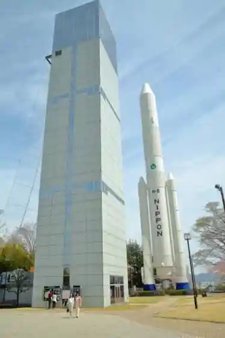
Kakuda Local Museum
Local history museum in a former merchant residence
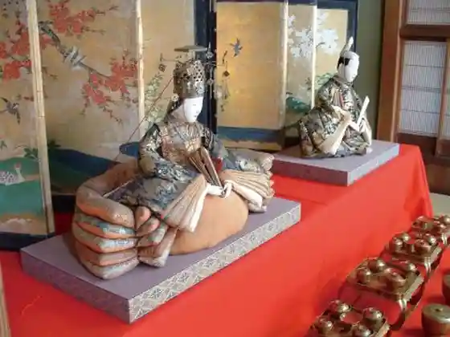
JA Miyagi Sennan Shinken Factory
Agricultural processing facility open for visits
Mt. Tokura
Wooded hill and birdwatching area west of town
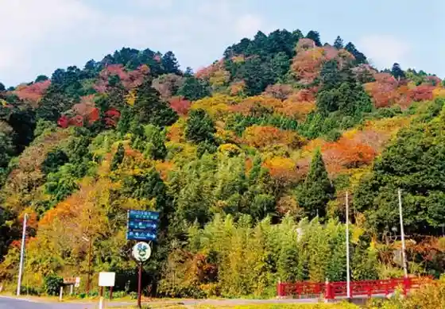
JAXA Kakuda Space Center
Rocket-engine research campus with public exhibits
Former Sato Residence
Historic house near Kozan-ji
Kozan-ji Amida Hall
National Important Cultural Property — among Miyagi’s oldest wooden halls